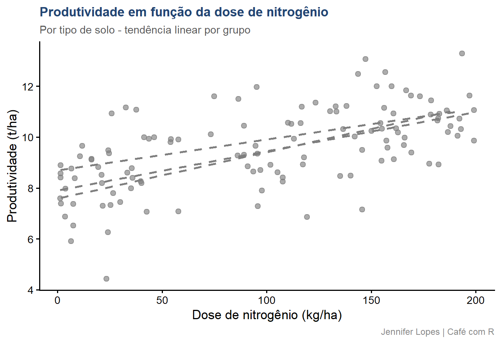
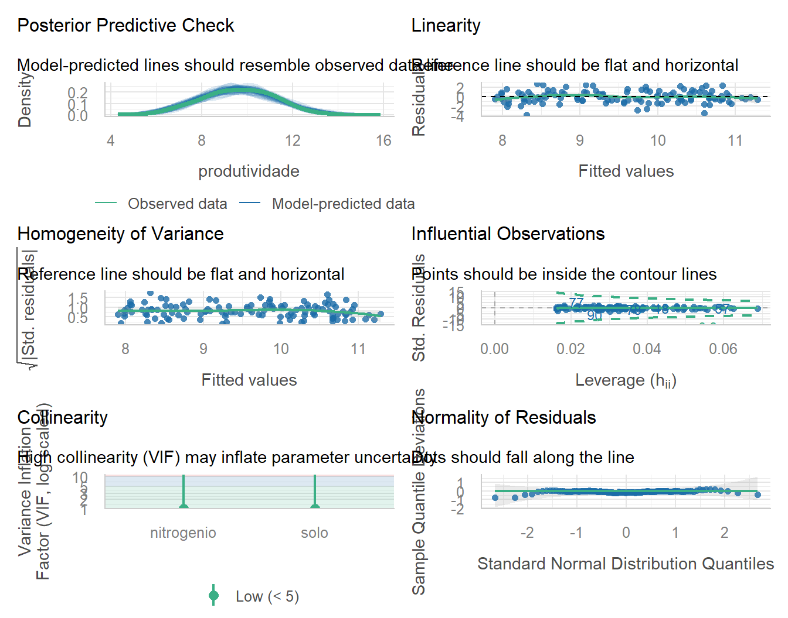
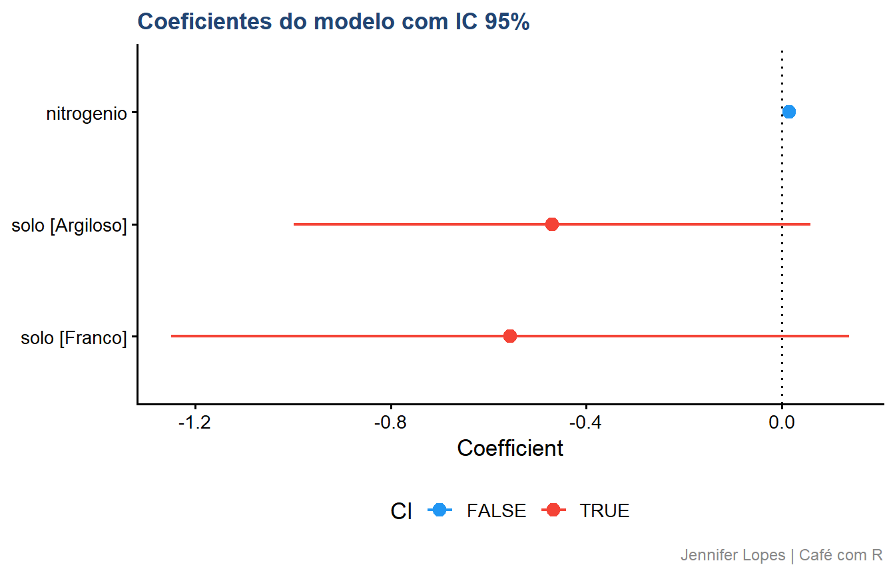
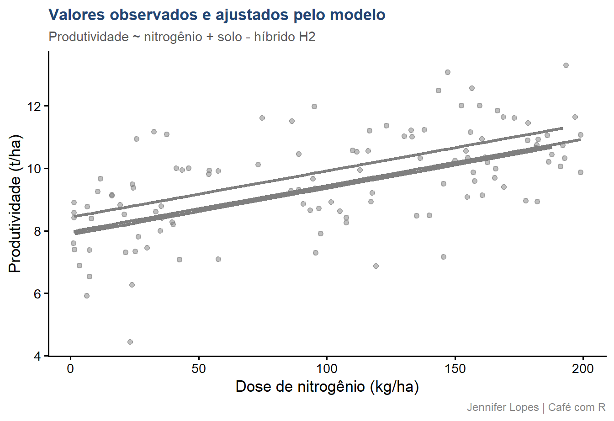

Code
amostra |>
select(produtividade, fertilidade, nitrogenio, solo) |>
skim()Fluxo completo em 10 passos com tidyverse, broom, easystats e tidymodels
Esta aula apresenta o fluxo completo da modelagem estatística em 10 passos. Os dados são os mesmos das aulas anteriores - híbrido H2 - com a adição de variáveis de fertilidade e dose de nitrogênio para suportar os exemplos de modelagem.


broom, easystats e tidymodels na práticaPara que serve:
Atenção: modelo bom não é o mais complexo é o mais parcimonioso e confiável. Um modelo que explica bem com menos parâmetros é preferível a um que ajusta perfeitamente apenas nos dados observados.
Dados → Modelo → Estimação → Diagnóstico → Inferência/PrediçãoEsse fluxo não é linear na prática.
Diagnóstico inadequado leva de volta à escolha do modelo.
Exploração insuficiente compromete a estimação.
Cada passo informa o seguinte e pode questionar o anterior.
Três objetivos possíveis, com implicações distintas:
| Objetivo | Pergunta central | Implicação para o modelo |
|---|---|---|
| Explicação | Quais variáveis afetam \(Y\) e como? | Interpretabilidade dos coeficientes |
| Predição | Qual o valor de \(Y\) para novos dados? | Acurácia fora da amostra |
| Ambos | Explicar e generalizar | Equilíbrio entre ajuste e complexidade |
Atenção: um modelo construído para explicação não deve ser avaliado apenas por métricas preditivas, e vice-versa.
Com o objetivo estabelecido, o problema é especificado em termos estatísticos:
No contexto desta aula:
\(Y\) = produtividade do híbrido H2 (contínua, t/ha)
\(X\) = dose de nitrogênio (contínua, kg/ha) e tipo de solo (categórica)
Objetivo: explicar o efeito do nitrogênio sobre a produtividade, controlando pelo tipo de solo.
A exploração descritiva precede qualquer decisão de modelagem.
Ela revela a distribuição das variáveis, a presença de valores atípicos, a necessidade de transformações e a estrutura das relações entre as variáveis.
amostra |>
select(produtividade, fertilidade, nitrogenio, solo) |>
skim()| Name | select(amostra, produtivi… |
| Number of rows | 120 |
| Number of columns | 4 |
| _______________________ | |
| Column type frequency: | |
| character | 1 |
| numeric | 3 |
| ________________________ | |
| Group variables | None |
Variable type: character
| skim_variable | n_missing | complete_rate | min | max | empty | n_unique | whitespace |
|---|---|---|---|---|---|---|---|
| solo | 0 | 1 | 6 | 8 | 0 | 3 | 0 |
Variable type: numeric
| skim_variable | n_missing | complete_rate | mean | sd | p0 | p25 | p50 | p75 | p100 | hist |
|---|---|---|---|---|---|---|---|---|---|---|
| produtividade | 0 | 1 | 9.56 | 1.60 | 4.43 | 8.51 | 9.66 | 10.73 | 13.30 | ▁▃▇▇▂ |
| fertilidade | 0 | 1 | 4.79 | 1.67 | 0.08 | 3.83 | 4.83 | 5.86 | 9.75 | ▁▅▇▃▁ |
| nitrogenio | 0 | 1 | 98.97 | 64.25 | 1.32 | 34.64 | 106.44 | 156.78 | 199.06 | ▇▂▅▅▆ |
amostra |>
ggplot(aes(x = nitrogenio, y = produtividade,
color = solo)) +
geom_point(alpha = 0.65, size = 2.2) +
geom_smooth(method = "lm", se = FALSE,
linewidth = 1, linetype = "dashed") +
scale_color_manual(values = c(
"Argiloso" = cores_cafe["azul_escuro"],
"Arenoso" = cores_cafe["azul_claro"],
"Franco" = cores_cafe["marrom"])) +
labs(
title = "Produtividade em função da dose de nitrogênio",
subtitle = "Por tipo de solo - tendência linear por grupo",
x = "Dose de nitrogênio (kg/ha)",
y = "Produtividade (t/ha)",
color = "Solo",
caption = "Jennifer Lopes | Café com R") +
tema
1. Natureza da variável resposta:
| Tipo de \(Y\) | Família indicada |
|---|---|
| Contínua, simétrica | LM - Modelo Linear |
| Contagem | GLM - Poisson ou Negativa Binomial |
| Binária (0/1) | GLM - Binomial (logit, probit) |
| Contínua positiva, assimétrica | GLM - Gamma |
| Dados hierárquicos ou repetidos | LMM ou GLMM |
2. Estrutura dos dados: observações independentes permitem LM/GLM. Dados com blocos, localidades ou medidas repetidas requerem efeitos aleatórios.
3. Princípio da parcimônia: entre dois modelos com ajuste equivalente, o mais simples é preferível.
Atenção: a escolha do modelo antes da exploração dos dados é um erro metodológico frequente. A natureza dos dados deve guiar a escolha, não o hábito ou a familiaridade com determinado procedimento.
Métodos principais:
\[\hat{\beta} = (X^TX)^{-1}X^TY\]
\[\hat{\theta} = \arg\max_\theta \, \mathcal{L}(\theta \mid \text{dados})\]
# Especificar o modelo com parsnip
modelo_spec <- linear_reg() |>
set_engine("lm") |>
set_mode("regression")
# Criar receita de pré-processamento com recipes
receita <- recipe(
produtividade ~ nitrogenio + solo,
data = amostra) |>
step_dummy(solo) |>
step_normalize(nitrogenio)
# Montar o workflow
wf <- workflow() |>
add_recipe(receita) |>
add_model(modelo_spec)
# Ajustar o modelo
modelo_ajustado <- wf |> fit(data = amostra)
# Extrair coeficientes com broom
modelo_ajustado |>
extract_fit_parsnip() |>
tidy(conf.int = TRUE) |>
mutate(across(where(is.numeric), ~ round(.x, 4)))# A tibble: 4 × 7
term estimate std.error statistic p.value conf.low conf.high
<chr> <dbl> <dbl> <dbl> <dbl> <dbl> <dbl>
1 (Intercept) 9.90 0.211 47.0 0 9.49 10.3
2 nitrogenio 0.954 0.118 8.07 0 0.720 1.19
3 solo_Argiloso -0.469 0.267 -1.76 0.0812 -0.998 0.0591
4 solo_Franco -0.555 0.350 -1.59 0.116 -1.25 0.138 O diagnóstico avalia se os pressupostos do modelo são atendidos pelos dados.
Um modelo mal especificado ou com pressupostos violados produz estimativas e inferências não confiáveis, independentemente do tamanho da amostra.
Pressupostos do modelo linear:
| Pressuposto | O que verifica | Como verificar |
|---|---|---|
| Linearidade | Relação linear entre \(X\) e \(Y\) | Resíduos vs. ajustados |
| Normalidade dos resíduos | Erros com distribuição normal | QQ-plot dos resíduos |
| Homocedasticidade | Variância constante dos erros | Scale-location plot |
| Independência | Sem autocorrelação entre resíduos | Resíduos vs. ordem |
| Ausência de influência excessiva | Sem pontos alavancados | Cook’s distance |
modelo_lm <- lm(
produtividade ~ nitrogenio + solo,
data = amostra)
# check_model() do pacote performance (easystats)
# Gera painel completo de diagnóstico automaticamente
check_model(modelo_lm)
A validação avalia a capacidade do modelo de generalizar para dados não observados.
Um modelo que ajusta bem apenas nos dados de treino pode ter desempenho fraco em dados novos - fenômeno conhecido como sobreajuste.
Estratégias de validação:
| Estratégia | Quando usar | Pacote |
|---|---|---|
| Holdout (treino/teste) | Amostras grandes | rsample (tidymodels) |
| Validação cruzada k-fold | Amostras moderadas | rsample + tune |
| Leave-one-out | Amostras pequenas | rsample |
| Bootstrap | Qualquer tamanho | rsample |
set.seed(2026)
# Divisão treino/teste
divisao <- initial_split(amostra, prop = 0.75)
treino <- training(divisao)
teste <- testing(divisao)
# Validação cruzada 5-fold no conjunto de treino
folds <- vfold_cv(treino, v = 5)
# Ajustar e avaliar com yardstick
resultado_cv <- wf |>
fit_resamples(
resamples = folds,
metrics = metric_set(rmse, rsq, mae))
collect_metrics(resultado_cv) |>
mutate(across(where(is.numeric), ~ round(.x, 4)))# A tibble: 3 × 6
.metric .estimator mean n std_err .config
<chr> <chr> <dbl> <dbl> <dbl> <chr>
1 mae standard 1.04 5 0.0845 pre0_mod0_post0
2 rmse standard 1.30 5 0.0954 pre0_mod0_post0
3 rsq standard 0.381 5 0.114 pre0_mod0_post0Critérios de comparação:
| Critério | O que mede | Interpretação |
|---|---|---|
| \(R^2\) ajustado | Proporção da variância explicada | Maior é melhor - penaliza complexidade |
| AIC | Qualidade do ajuste + complexidade | Menor é melhor |
| BIC | AIC com penalidade maior | Menor é melhor - favorece parcimônia |
| RMSE | Erro médio de predição | Menor é melhor |
Atenção: AIC e BIC comparam modelos ajustados aos mesmos dados. Modelos ajustados a amostras diferentes ou com variáveis resposta transformadas não são diretamente comparáveis por esses critérios.
# Modelo 1: apenas nitrogênio
m1 <- lm(produtividade ~ nitrogenio, data = amostra)
# Modelo 2: nitrogênio + solo
m2 <- lm(produtividade ~ nitrogenio + solo, data = amostra)
# Modelo 3: nitrogênio + solo + interação
m3 <- lm(produtividade ~ nitrogenio * solo, data = amostra)
# Comparar com broom::glance()
list(
"M1: nitrogenio" = m1,
"M2: nitrogenio + solo" = m2,
"M3: nitrogenio * solo" = m3) |>
map(glance) |>
list_rbind(names_to = "modelo") |>
select(modelo, r.squared, adj.r.squared, AIC, BIC, sigma) |>
mutate(across(where(is.numeric), ~ round(.x, 4)))# A tibble: 3 × 6
modelo r.squared adj.r.squared AIC BIC sigma
<chr> <dbl> <dbl> <dbl> <dbl> <dbl>
1 M1: nitrogenio 0.352 0.346 406. 414. 1.29
2 M2: nitrogenio + solo 0.373 0.356 406. 420. 1.28
3 M3: nitrogenio * solo 0.379 0.352 409. 428. 1.28| Família | Resposta | Pressuposto central | Função no R |
|---|---|---|---|
| LM | Contínua, normal | Linearidade, homocedasticidade | lm() |
| GLM - Poisson | Contagem | Distribuição de Poisson | glm(family = poisson) |
| GLM - Binomial | Binária (0/1) | Distribuição binomial | glm(family = binomial) |
| GLM - Gamma | Contínua positiva | Distribuição Gamma | glm(family = Gamma) |
| LMM | Contínua, hierárquica | Efeitos aleatórios normais | lmer() (lme4) |
| GLMM | Não normal, hierárquica | GLM + efeitos aleatórios | glmer() (lme4) |
A interpretação traduz os coeficientes estimados em afirmações substantivas sobre o fenômeno estudado.
No modelo linear:
\[\hat{Y} = \hat{\beta}_0 + \hat{\beta}_1 X_1 + \hat{\beta}_2 X_2\]
\(\hat{\beta}_1\) representa a variação esperada em \(Y\) para um aumento de uma unidade em \(X_1\), mantendo as demais variáveis constantes.
Atenção: coeficientes significativos não implicam efeitos relevantes na prática. Um efeito de 0,01 t/ha por kg/ha de nitrogênio pode ter p-valor abaixo de 0,001 com \(n = 120\) e ser irrelevante para a decisão de adubação. Sempre reporte o IC junto ao coeficiente.
# parameters() do easystats - tabela de coeficientes formatada
model_parameters(m2, ci = 0.95) |>
mutate(across(where(is.numeric), ~ round(.x, 4)))# Fixed Effects
Parameter | Coefficient | SE | 95% CI | t(116) | p
-----------------------------------------------------------------------
(Intercept) | 8.43 | 0.27 | [ 7.89, 8.97] | 30.90 | < .001
nitrogenio | 0.01 | 1.80e-03 | [ 0.01, 0.02] | 8.07 | < .001
soloArgiloso | -0.47 | 0.27 | [-1.00, 0.06] | -1.76 | 0.081
soloFranco | -0.56 | 0.35 | [-1.25, 0.14] | -1.59 | 0.116 # plot() sobre model_parameters() gera gráfico de coeficientes com IC
model_parameters(m2, ci = 0.95) |>
plot() +
labs(
title = "Coeficientes do modelo com IC 95%",
caption = "Jennifer Lopes | Café com R") +
tema
O que comunicar:
# augment() adiciona valores ajustados e resíduos ao data frame original
m2 |>
augment(data = amostra) |>
ggplot(aes(x = nitrogenio, y = produtividade,
color = solo)) +
geom_point(alpha = 0.5, size = 1.8) +
geom_line(aes(y = .fitted), linewidth = 1.2) +
scale_color_manual(values = c(
"Argiloso" = cores_cafe["azul_escuro"],
"Arenoso" = cores_cafe["azul_claro"],
"Franco" = cores_cafe["marrom"])) +
labs(
title = "Valores observados e ajustados pelo modelo",
subtitle = "Produtividade ~ nitrogênio + solo - híbrido H2",
x = "Dose de nitrogênio (kg/ha)",
y = "Produtividade (t/ha)",
color = "Solo",
caption = "Jennifer Lopes | Café com R") +
tema
Aplicar diretamente um modelo linear sem verificar a distribuição da variável resposta, a presença de valores atípicos ou a estrutura das relações entre as variáveis compromete todos os passos subsequentes.
A exploração descritiva não é opcional - é o que informa a escolha adequada do modelo.
Um modelo que não passa no diagnóstico não deve ser usado para inferência ou predição, independentemente do valor de \(R^2\).
Um \(R^2\) alto nos dados de treino não garante bom desempenho em dados novos. Modelos com muitos parâmetros tendem a memorizar o ruído dos dados observados, sobreajuste.
A validação cruzada é o procedimento correto para avaliar a capacidade preditiva real do modelo.
O p-valor indica se o efeito é detectável estatisticamente, não se é relevante na prática.
Com amostras grandes, efeitos triviais produzem p-valores muito pequenos.
Sempre reporte o coeficiente estimado, seu intervalo de confiança e uma avaliação da relevância prática no contexto do problema.
Adicionar variáveis, interações ou efeitos aleatórios sem justificativa metodológica aumenta a complexidade sem necessariamente melhorar a qualidade da inferência.
A comparação formal por AIC, BIC ou validação cruzada orienta a decisão entre modelos concorrentes com base em evidência, não em preferência.
| Passo | Título | Pacotes principais |
|---|---|---|
| 1 | Definir o objetivo | - |
| 2 | Definir o problema | - |
| 3 | Explorar e preparar os dados | skimr, tidyverse |
| 4 | Escolher o modelo | - |
| 5 | Estimar os parâmetros | tidymodels (parsnip, recipes) |
| 6 | Diagnosticar o modelo | performance, see |
| 7 | Validar o modelo | tidymodels (rsample, yardstick) |
| 8 | Comparar modelos | broom::glance() |
| 9 | Interpretar os resultados | parameters, broom::tidy() |
| 10 | Comunicar os resultados | broom::augment(), ggplot2 |

Continue praticando e explorando.
Esta aula é parte do projeto Café com R. É open source. Use, compartilhe e adapte.
Que cada gole desperte uma nova ideia.
Que cada script abra uma nova conversa.
Que o Café com R se torne um ponto de encontro nosso.